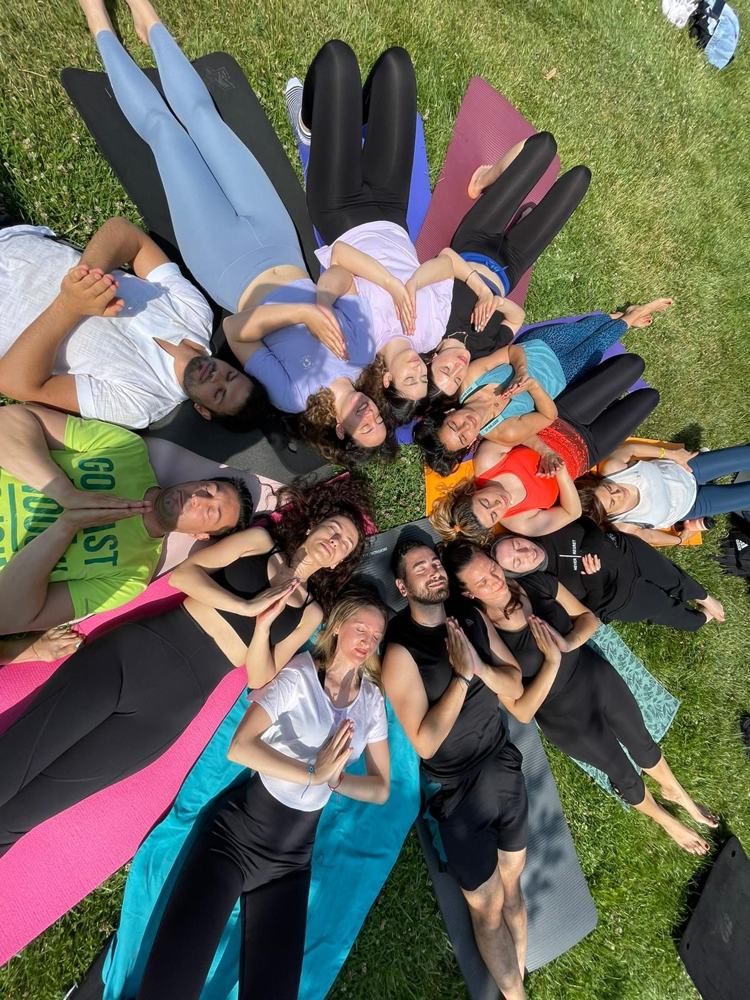
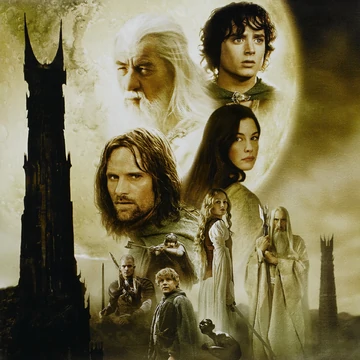

Yasemin Karış
Hakkımda
Merhaba, ben Yasemin Karış! İstanbul'da yaşıyorum. 24 yaşımdayım ve Gebze
Teknik Üniversitesinde master MBA öğrencisiyim.
E peki neden yazılım Yasemincim diyenlere bir çok cevabım var fakat galiba
en önemlisi klişe olan 5 yıl sonra kendini nerede görmek istersin sorusunun
cevabında saklı. Ben kendimi 5 yıl sonra sevdiğim işi yapıyor ve imkanlar
dahilinde işimin en iyisi olarak görmek istiyorum ve bu yüzden şu an bunun
için çalışıyorum. Kısa bir süre önce patika dev ile tanıştım bu yolda bana
çok değerli bilgiler katacağına eminim!
Evet öğrenciyim, yeni bir şeyler öğreniyorum bunların dışında bir de part
time bir işte çalışıyorum fazlasıyla yoğun bir hayatım var.
Bana kalan azıcık boş zamanlarımda yoga yapıyorum beni en çok rahatlatan ve
dinginleştiren tartışmasız tek aktivite bu :) Sanırım kabul etmem gerekiyor
biraz hiperaktif bir yapıya sahibim enerjim hiç bitmez desek yeridir. Hayat
kısa demişler ben de tüm anlarımı doya doya yaşamayı tercih ediyorum:)
ilgi Alanlarım
yoga yapmak
2 yıldır düzenli olarak yoga ve pilates yapıyorum. sizlere yoga grubumla
sahilde yaptığımız bir dersten fotoğraf gösterebilirim:)

2021 mayıs yoga grubumla güneş pozu
kitap okumak
En sevdiğim kitaplar
- Alışkanlıkların Gücü - Charles Duhig
- Robotların Yükselişi - Martin Ford
- Beyin - David Eagleman
- Etkili İnsanların 7 Özelliği - Stephen R. Covey
Film ve dizi izlemek
En sevdiğim film ve diziler
- The Lord of the Rings

- Black Mirror

- Love, Death & Robots

Müzik dinlemek
En sevdiğim müziklerin linkleri
-
vikings song
-
come join the murder
-
my mother told me
Patika Dev